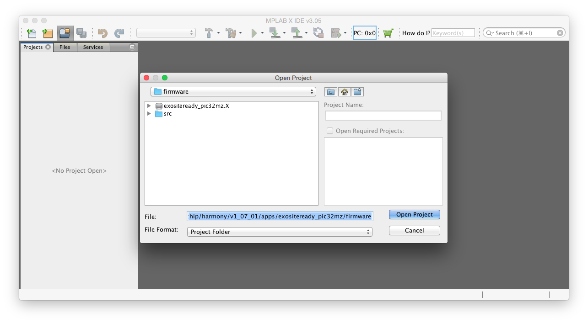
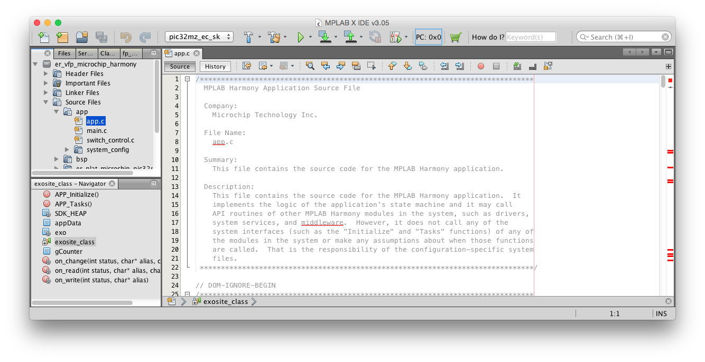

Lab 1 - Getting Started with the ExositeReady SDK
The ExositeReady SDK is a software framework provided by Exosite to ease development of production-quality embedded device firmware for IoT products. It's open source software, provided under the Apache-2.0 license, that means that you're free to do whatever you'd like with it as long as you share any changes to the SDK itself while being able to keep the rest of your application's code private if that's what you'd like.
In this lab you'll go through getting the PIC32MZ Embedded Connectivity Starter Kit flashed with the demo firmware provided alongside the ER SKD. You'll learn the basics of what is required to get IoT devices connected to the Exosite platform and see real-time data from your devices streaming to your web browser.
Requirements
- PIC32MZ Embedded Connectivity Starter Kit
- An Internet Connection
- A Computer with MPLAB IDE, including:
- MPLABX IDE v 3.30
- Harmony v1.08
- XC32 v1.40b
- The ExositeReady SDK, plus
- The PIC32MZECSK port & example application
If you don't have any of the above software installed, see the Lab Setup Guide before proceeding with this Lab. MASTERS attendees that have access to the in-class lab computers should have everything setup already.
Let's Go
First you'll want to open MPLAB X.
And open the exositeready_pic32mz project, which can be found in the "C:\microchip\harmony\v1_08\apps\exositeready_pic32mz\firmware" folder.

You can now explore the source of this project if you'd like.

Running the Example
Before we dig into what the code is doing, let's build, flash, and run the provided example.
Connect the Starter Kit board to you computer using both mini USB connectors; one is for the onboard debugger and the other is for access to the serial terminal.
If you have more than one project open in MPLAB, make sure that the exositeready_pic32mz project is set as the main project, it's name should appear in the window's title bar, you can do this simply clicking on the project in the 'Projects' tab in the left-side bar.
If you have more than one project open, make sure that the exositeready_pic32mz project is set as the currently active project. The click the "Make and Program Device Main Project" button.
You may be prompted to select a different device, this will happen if the starter kit you're using isn't the last one used with this project. MPLAB should offer to switch to the kit that is currently connected to your computer; just click "OK". If you're shown a list of tools, there should only be one valid option. Choose the item listed under "Starter Kits (PKOB)".
It will take several minutes to compile and flash the board.
Once this is complete, the board will boot the demo application, connect to Exosite's servers, and begin reading & writing data. Once this happens you should see the three LEDs along the 40-pin header turn on.
To follow the progress of the application booting and connecting you can use a serial terminal application to view the application's debug log. Open the serial terminal application on the computer and connect to the virtual serial port provided by the device, it should be the only one available on your computer.
Interacting with the Board Via the Web
Once the board has booted the application and connected you can control the LEDs and see the status of the buttons through a custom web app that was created specifically for this class.
To find your board, go to https://labui.apps.exosite-dev.io/ and find your board in the list by looking at the MAC address. (Note: You can find you device's MAC address by watching the serial terminal output when you first boot the application.) Select your device and toggle some of the LEDs on and off or press the switches on the board to see the indicators in the webui change.
Note: I would suggest leaving this project open, lab 2 will pickup where this one left off.